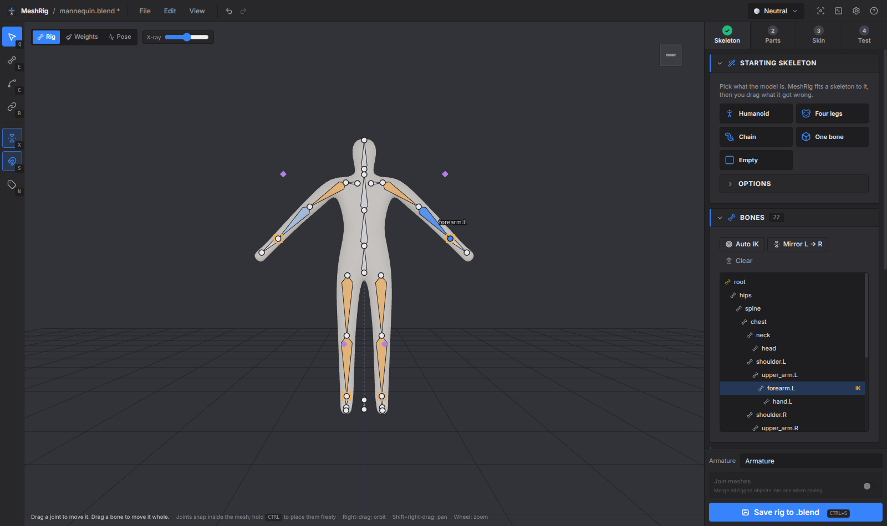
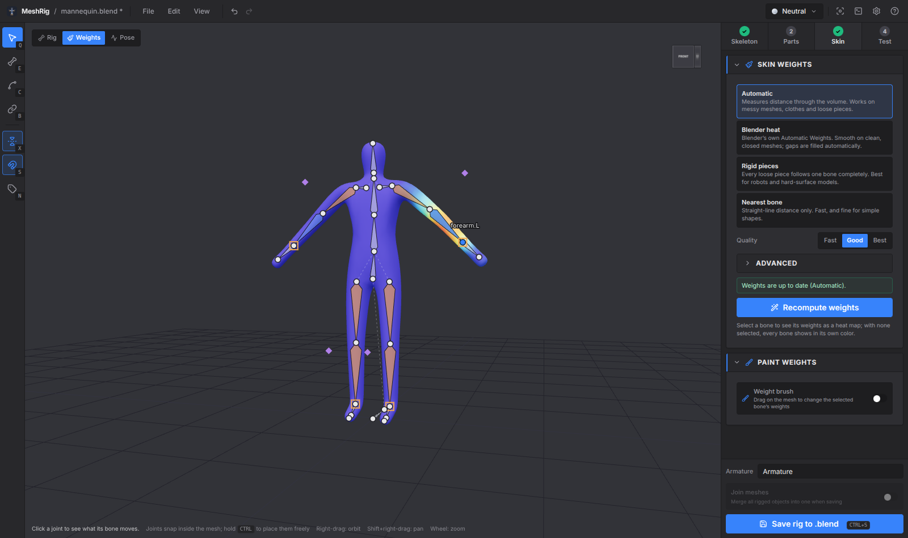
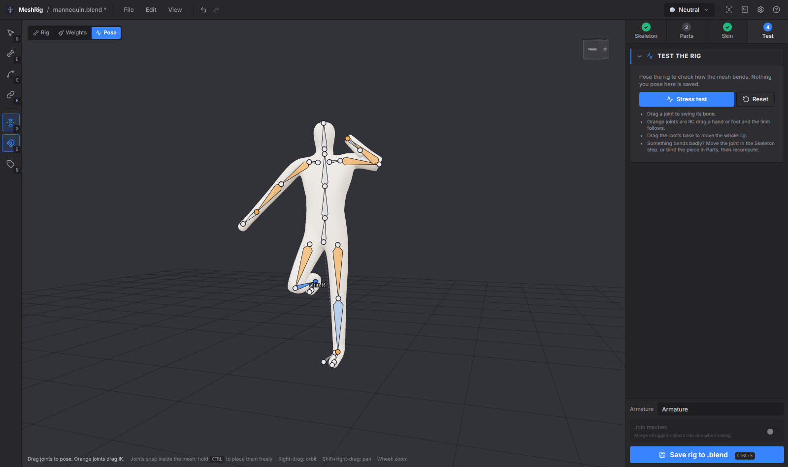
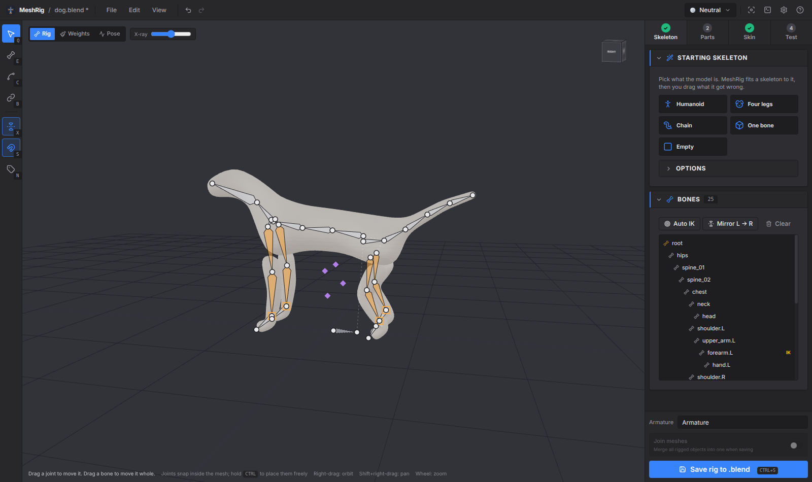
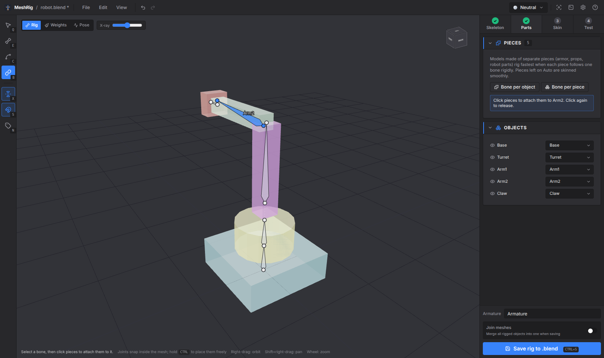

Rig any mesh in minutes
Open a .blend, pick a starting skeleton, drag what it got wrong, skin it, test it, save it. MeshRig writes a normal Blender armature with vertex groups and IK, so the rig works everywhere a Blender rig does.

Four steps
The sidebar walks you through them. Each step can be redone at any time; everything is undoable.
1 · Skeleton
Pick Humanoid, Four legs, Chain or One bone. MeshRig reads the model's outline to find the crotch, neck, hands and legs, and centres every joint inside the mesh. Drag what's off; the other side follows.
2 · Parts
For armour, props and robots: select a bone and click the pieces it should carry, or give every object or loose piece a bone of its own in one click.
3 · Skin
Automatic weights measured through the model's volume, so they work on messy meshes and loose pieces. Or Blender's own bone heat, rigid pieces, or nearest bone. Fix the rest with the weight brush.
4 · Test
Pose the skinned rig by dragging hands and feet, or run the stress test to bend every joint in turn. Then save into the .blend.




What it does
- Snaps joints inside the mesh. Click or drag on the model and the joint goes to the middle of the limb under the cursor, not onto its surface. Hold Ctrl to place it freely.
- Symmetry. Bones named .L/.R are edited in pairs. New bones off the centre line get a mirrored twin.
- Build your own. Add bone extends the selected bone with a click; Draw chain turns a stroke along a tail or tentacle into a chain.
- IK that just works. Arms and legs get IK targets and poles. MeshRig works out which way knees and elbows bend, rolls the bones to match, and calibrates the pole angle in Blender so the rest pose doesn't move.
- Small pieces stay rigid. Eyes, buttons and teeth follow one bone instead of stretching.
- Reopens exactly. MeshRig stores its skeleton on the armature. Open the file again and carry on where you left off. Rigs made elsewhere open too; their IK becomes MeshRig IK.
- Safe saves. The .blend is backed up to
.meshrig-backups/before each save, and the last 20 copies are kept.
Keys
| 1–4 | Skeleton / Parts / Skin / Test |
| Q E C B | Select, Add bone, Draw chain, Bind pieces |
| Shift+click | Start a new chain (Add bone) |
| X / S / N | Symmetry / Snap inside / Bone names |
| Del | Delete bone |
| Num 1 Num 3 Num 7 | Front / side / top view |
| F | Frame the model or the selected bone |
| Ctrl+Z / Ctrl+S | Undo / Save |
| Right-drag / Shift+right-drag / wheel | Orbit / pan / zoom |
Requirements
MeshRig runs Blender in the background to read and write .blend files. Tested with Blender 5.2. It finds Blender on its own, or you can pick it in Preferences.